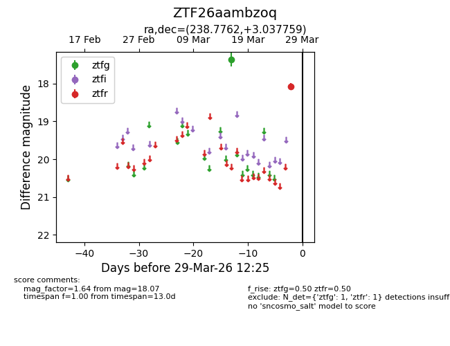
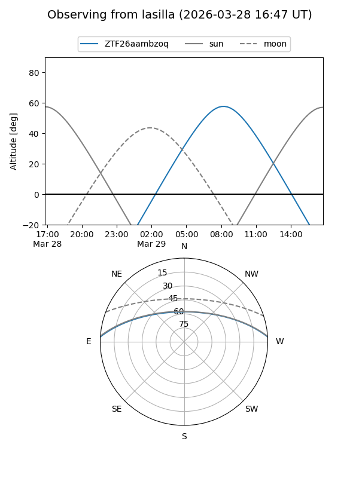
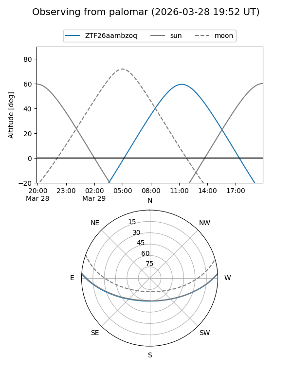

ZTF26aambzoq
Target ZTF26aambzoq at 2026-03-29 12:28
Aliases and brokers:
FINK: link
Lasair: link
ALeRCE: link
alt names
ZTF26aambzoq (ztf,fink_ztf)
Coordinates:
equatorial (ra, dec) = 238.7762,+3.03776
equatorial (HMS+DMS) = 15:55:06.29,+03:02:15.93
galactic (l, b) = (12.3322,+39.97565)
Flags:
Photometry:
last ztfg=17.36, ztfr=18.07
1 ztfg, 1 ztfr detections
Lightcurve

Visibility


Additional plots